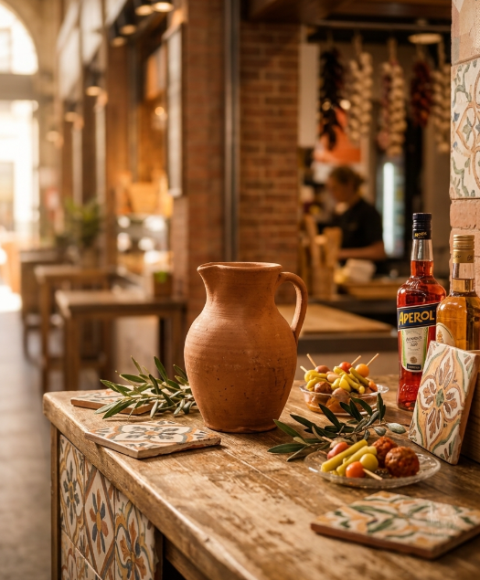
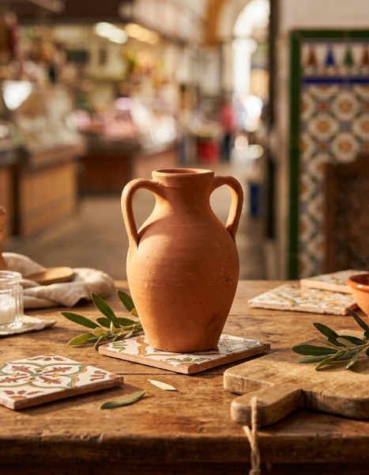

Tradition • Gastronomy • Craftsmanship
In the heart of the Triana Market, where traditional cuisine and artisan crafts come together to offer an authentic experience.
“Simplicity becomes excellence.”
Nuestra Historia
Bucaro was born in the heart of the Triana Market, a place where tradition, simplicity, and authenticity come together every day.
The name Bucaro is inspired by the traditional clay pot, a symbol of hospitality, warmth, and craftsmanship.
Our cuisine emphasizes subtlety through simplicity, offering traditional dishes prepared with respect for the ingredients and a great deal of care.
Descubrir nuestro menú

After many years dedicated to serving the people of Triana and Seville by sharpening knives and repairing shoes, among other services, we decided to expand our offerings within the Market, adapting to new demands without losing our essence. In the heart of the Triana Market, Bucaro was born—a place where tradition, simplicity, and authenticity come together every day.
The name Bucaro is inspired by the traditional clay vessel, a symbol of hospitality, warmth, and craftsmanship. Just as a búcaro carefully preserves what it holds inside, our desire is to preserve the most authentic flavors of Spanish cuisine and share them with everyone who walks through our door.
Since our beginnings, we've worked with a very simple idea: to show that you don't need great luxuries to offer an unforgettable experience. We believe that true quality stems from respect for the ingredients, traditional recipes, and the care with which each dish is prepared.
Our cuisine emphasizes delicacy through simplicity. Each recipe is crafted to convey the authentic flavor of Spanish tradition, respecting the ingredients and offering an intimate, welcoming experience full of personality.
But Bucaro is much more than just a place to eat. We want every guest to feel at home, enjoy a family-like atmosphere, and leave with a smile, taking with them the memory of a wonderful time shared around the table.
In addition to our culinary offerings, we also feature a carefully curated selection of genuine leather goods, reflecting the same commitment to quality, craftsmanship, and tradition that inspires our cuisine.
Welcome to Bucaro. A place where simplicity becomes excellence and where every detail is designed to make you feel like part of our family.
In addition to our cuisine, at Bucaro we keep alive an artisanal tradition that is part of our history. Each item reflects the same commitment to quality, authenticity, and craftsmanship that inspires every dish we serve.
Starting from €15
Authentic LeatherStarting from €20
HandcraftedStarting from €25
Exclusive designsStarting from €12
Andalusian traditionStarting from €20
Unique details"Every piece embodies the tradition, dedication and authenticity that define Bucaro."
We're right in the heart of Triana Market, one of Seville's most iconic spots. We look forward to welcoming you to discover our traditional cuisine and our handicrafts.
Mercado de Triana N. 61-62
Sevilla, España
+34 602 51 34 32
Monday - Saturday
10:30 - 15:30
bucarotienda@gmail.com
@bucaro_triana
y
@artesania_bucaro
@Bucaro Tienda